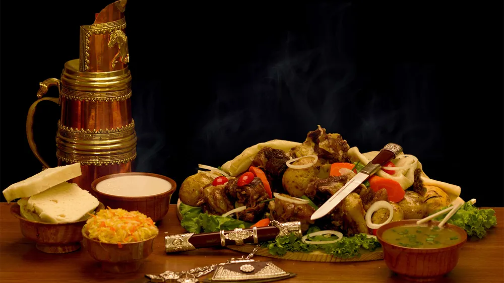
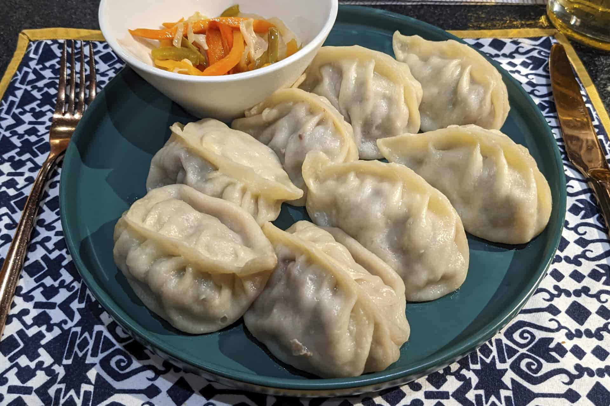
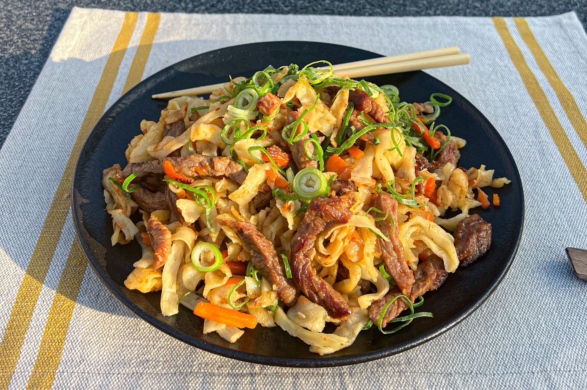
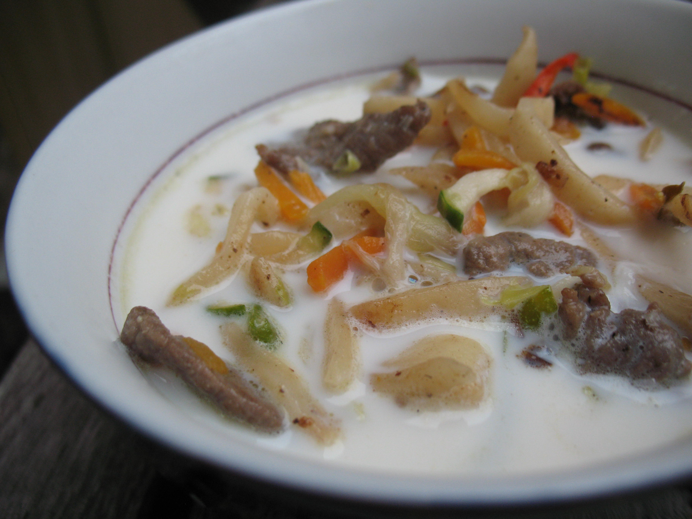

Traditional Mongolian Foods
Mongolian cuisine is hearty and flavorful, reflecting the country's nomadic heritage and cold climate. Here are some must-try dishes!




Horhog: A traditional Mongolian barbecue made by cooking lamb with hot stones inside a sealed metal container. The result is tender, juicy meat infused with smoky flavors.
Watch: Mongolian Food Short